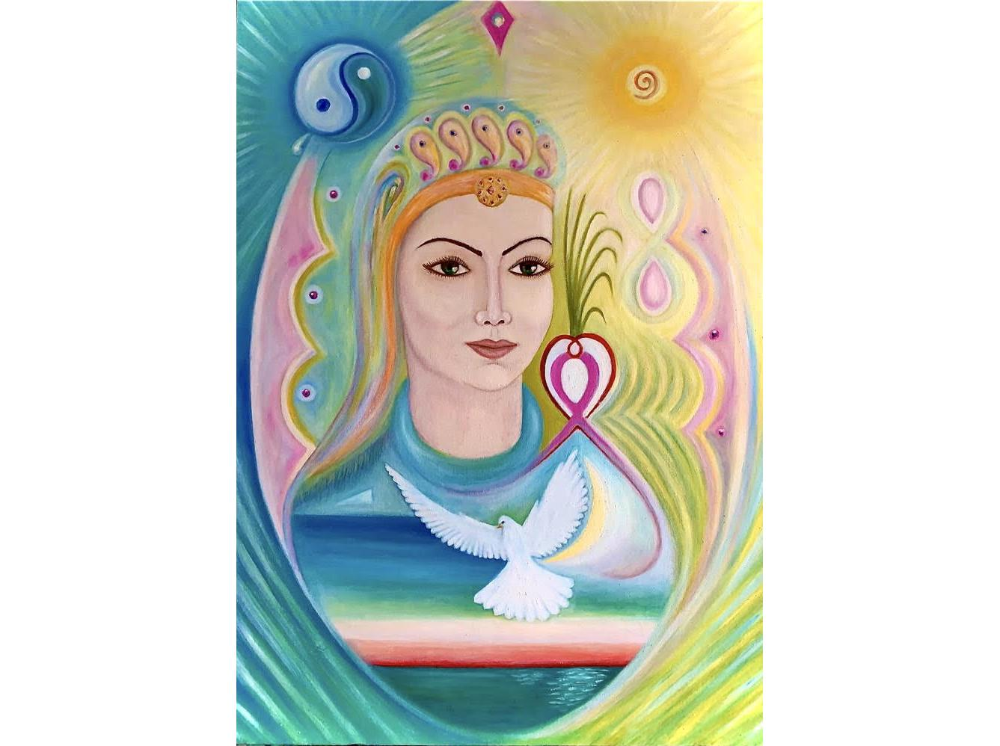
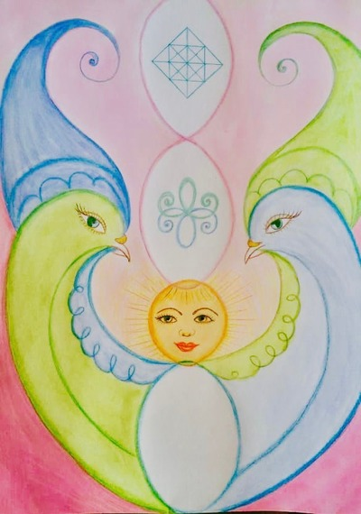
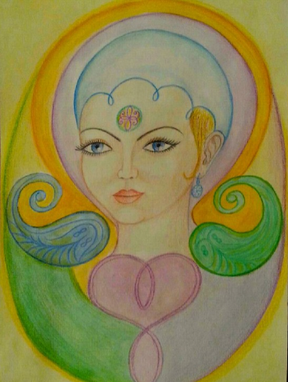

8 Марта
Матери, дочери, сестры, подруги!
Вас поздравляем с праздником весны,
С дыханием новым рек и блеском солнца!
Пусть будут ваши дни блаженны и ясны.
И утро пусть заглянет к вам в оконце.
Пусть будет пробуждением души
Хмельное воскресение природы!
И будьте вы всегда так хороши,
Как нежное сиянье небосвода.
И пусть вас, милые женщины, не смущают с годами появляющиеся морщинки.
Это лучики радости и сострадания вашей Души.
Дай вам Бог счастья, долголетия, любви и вдохновения!
И весны !!!
ФП ВЕСНЫ "Руки-Голуби"

Ссылка

И гордый взгляд небесной чистоты,
Гармония Стихий, спокойствие души!
О, ангельским крылом глава укрыта.
И бережно Судьба под Символом сокрыта.
Душа и Разум — всё едино в ней.
И ночи нет — сияет Божий день!
Автор текста и стихотворения: Росликова Елена Владимировна